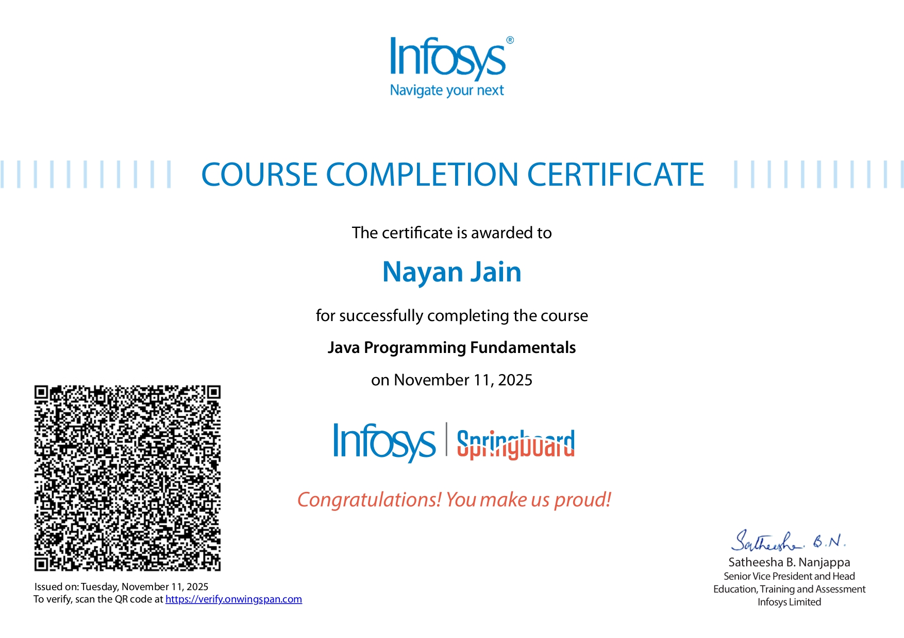
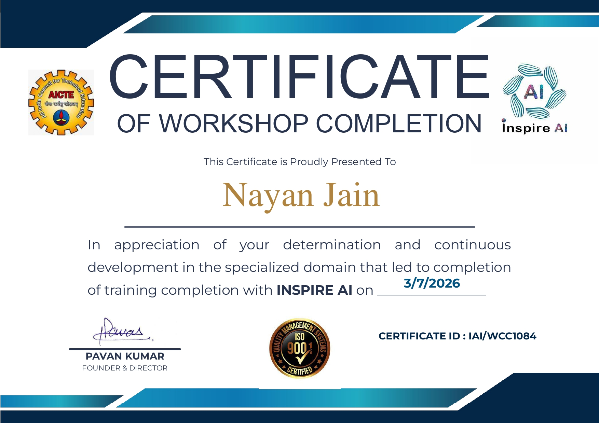
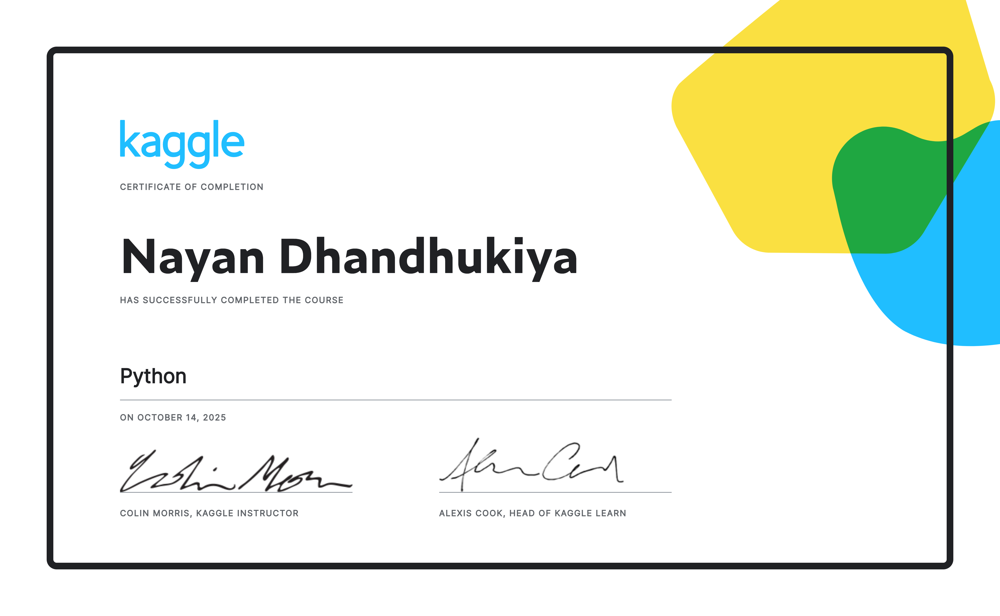
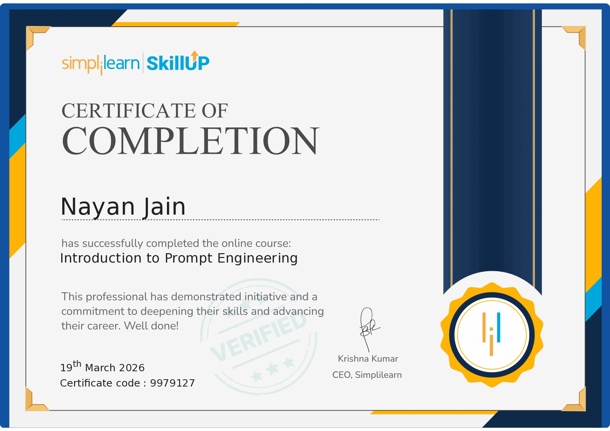

➤I am a passionate B.Tech student skilled in programming.
➤I am interested in Data Analytics, creating dashboards and real-world problem solving.
➤As a student,currently I am seeking for opportunities to learn and grow in the tech field.
➤My other hobbies are drawing,singing,sports etc..
▪10th:I secured 9.5 in my 10th standard.
▪School:I have done my schooling fromST JOSEPH CONVENT HIGH SCHOOL Adilabad,Telangana
▪12th:I secured 98.6% in my intermediate studies.
▪Intermediate:I have done my intermediate from ,ADITYA JUNIOR COLLEGE Adilabad,Telangana.
I am Nayan Jain,currently pursuing my BTech degree from ICFAI BUSSINESS SCHOOL located in Hyderabad,Telangana.
I am in 2nd year and I am good at C,Python,R,Java and enough good to solve DSA questions from leet code and other sites.
I have a good touch at Javascript ,CSS, and currently learning Reactjs.
I have habit of learning new programming languages with interest and I love to deploy or write my own logic in the codes rather than writting large lines of stuffs..
▪I love learning courses from the top companies that they launch for students ,I have done some certification courses and learned many new keywords from them and how the programming language works,I also implied theme for solving problems too!!!




▪ Here are some basic projects that I have done from my previous semester learnings and self learning...
Feel free to contact me if facing any problems. I would love to solve them together.